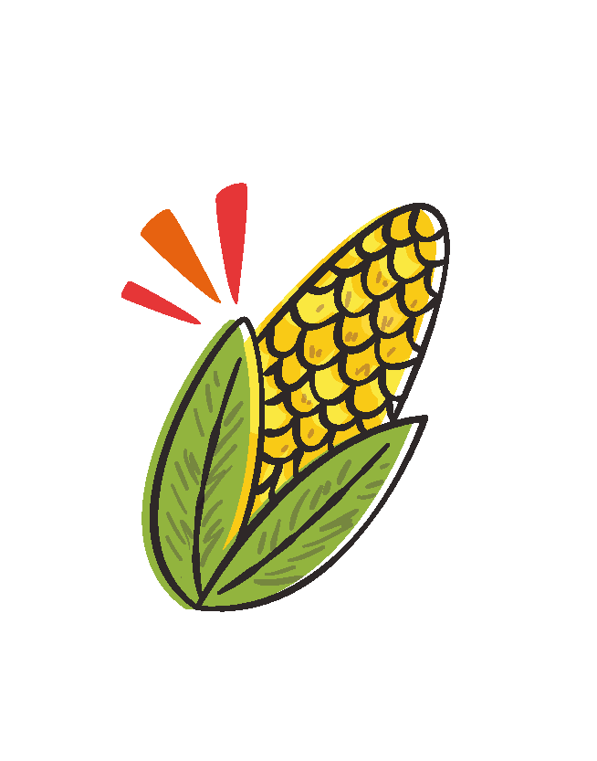
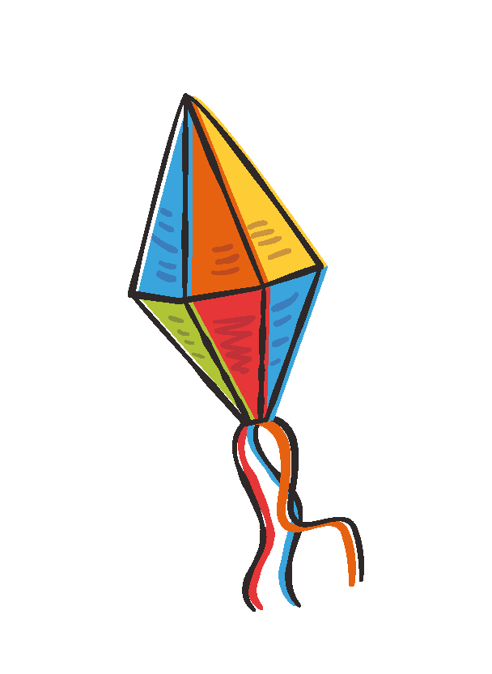
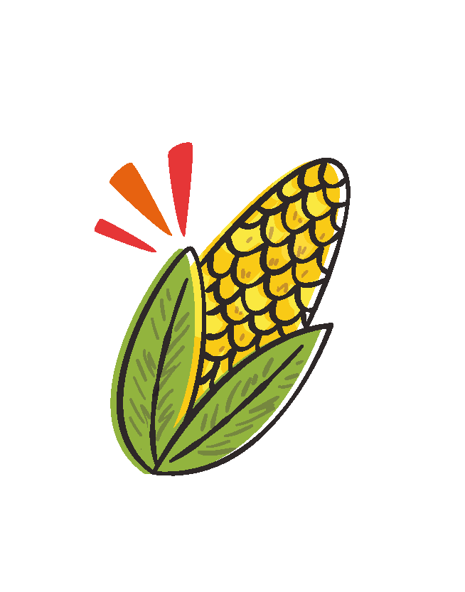
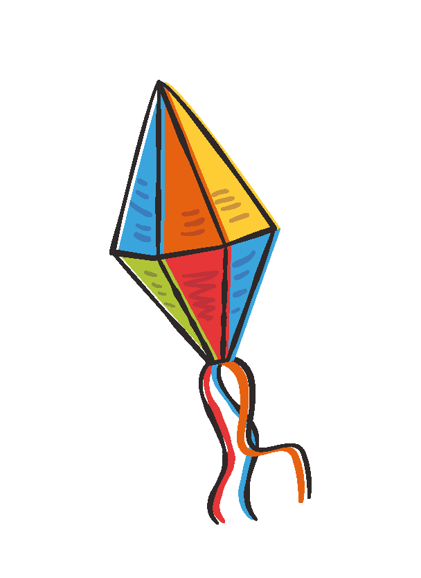
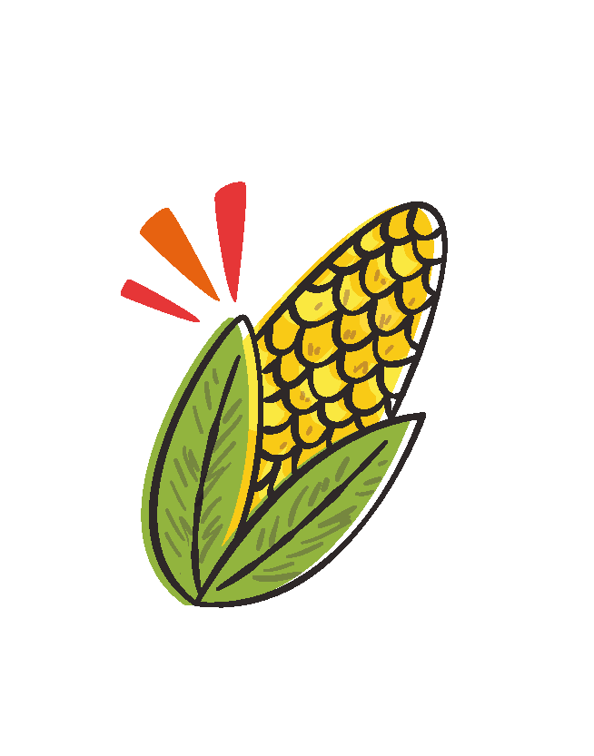
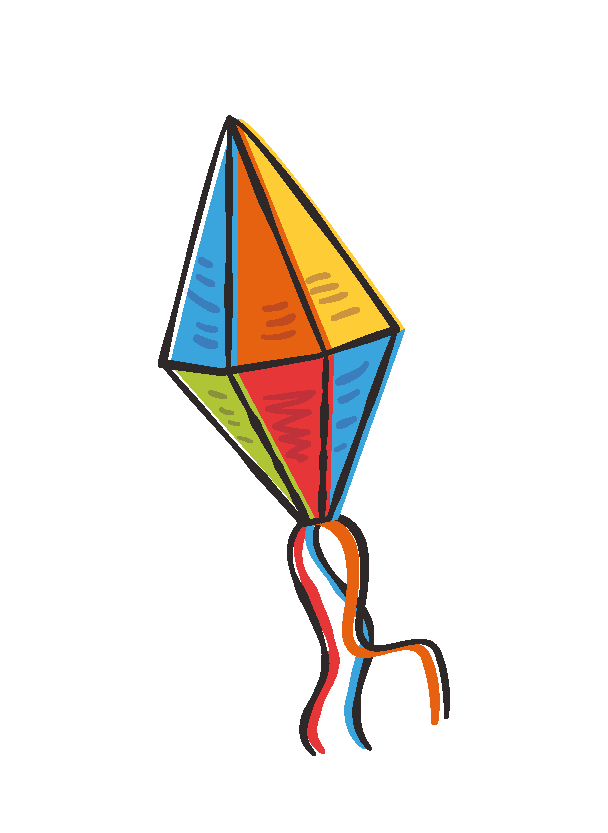

VEJA ALGUMAS FESTAS DE ANOS ANTERIORES
FESTA JUNINA - 2019
FESTA JUNINA - 2022
MAIS DA FESTA DE 2022
MAIS DA FESTA DE 2022
MAIS DA FESTA DE 2022
 
Voltar para o menu
Para mais Informações: 25166965
 

Voltar para o menu


Voltar para o menu